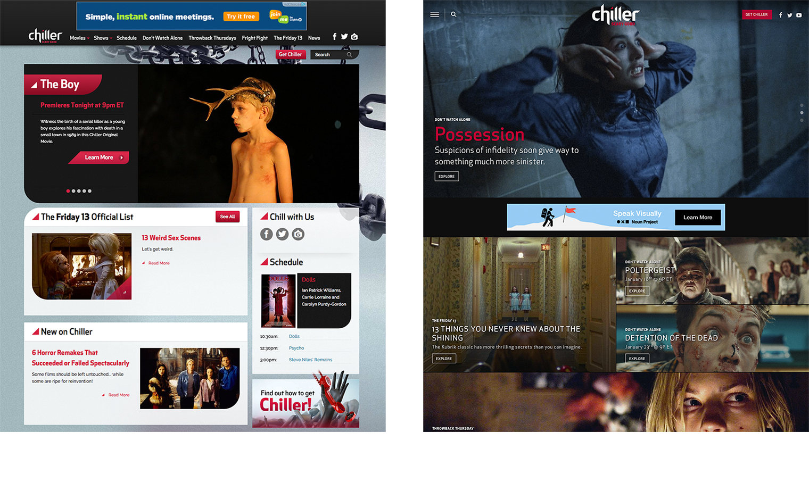

When shown side by side, the new design was preferred over the old one. The new design's picture tiles stood out positively, and it is more likely to be seen as “high-quality,” “cinematic,” “thrilling,” “scary,” “exciting,” and “engrossing.”
The new design was perceived more appealing to the horror viewers, showing that it has the potential to attract more horror fans to Chiller's new website.